Explore Cologne
A Brief History
Cologne, one of Germany's oldest cities, was founded by the Romans in the 1st century AD. It flourished throughout the Middle Ages as a major religious and commercial center, famously anchored by its monumental Gothic Cathedral. Despite extensive World War II devastation, the city has meticulously restored its historic landmarks and vibrant Rhineland culture.
Attractions Map
Top Sights & Activities
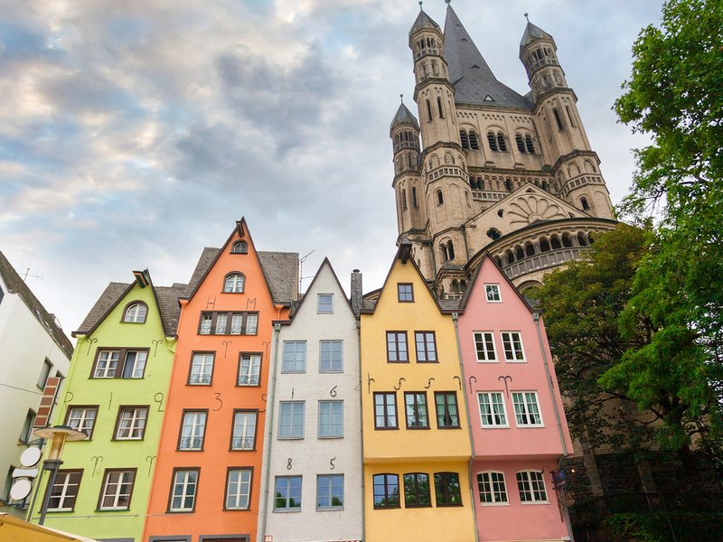
Cologne Cathedral
Construction of this High Gothic cathedral began in 1248 to house the relics of the Three Wise Men, making it a major pilgrimage center. Completed in 1880, it survived severe World War II bombings and stands as a UNESCO World Heritage site representing European Christianity.
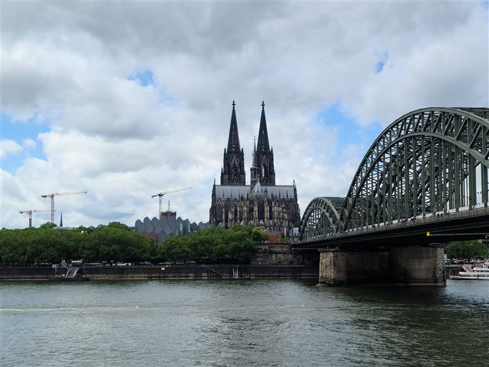
Hohenzollern Bridge
Originally built between 1907 and 1911, this bridge crossing the Rhine was a crucial railway link and a symbol of Prussian engineering. Rebuilt after World War II for rail and pedestrian use, it is famously adorned with thousands of 'love padlocks' left by couples.
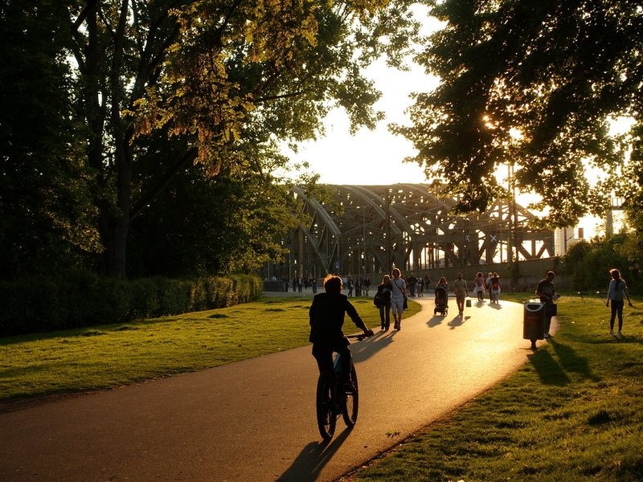
Hahnentorburg
Dating back to the early 13th century, this medieval gate was a vital component of the defensive city walls. Historically, it served as the western entrance through which Holy Roman Emperors passed after their coronation, providing a link to the city's past as a fortified imperial center.
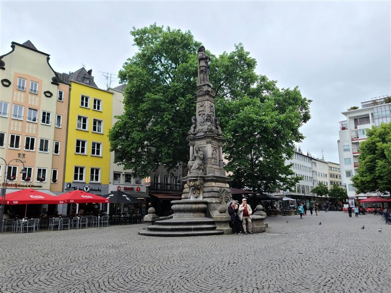
Alter Markt
This central square has been the heart of civic and commercial life since the Middle Ages. Historically the site of the main market and political gatherings, it was heavily reconstructed after World War II but retains its historical footprint, hosting traditional festivals and markets.
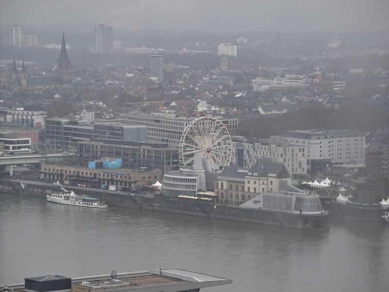
Schokoladenmuseum Koln
Opened in 1993, this museum explores the 5,000-year history of chocolate, from its origins in Mesoamerican cultures to modern industrial production. The building reflects modern architectural design integrated into a historic port area, detailing historical trade routes and manufacturing processes.
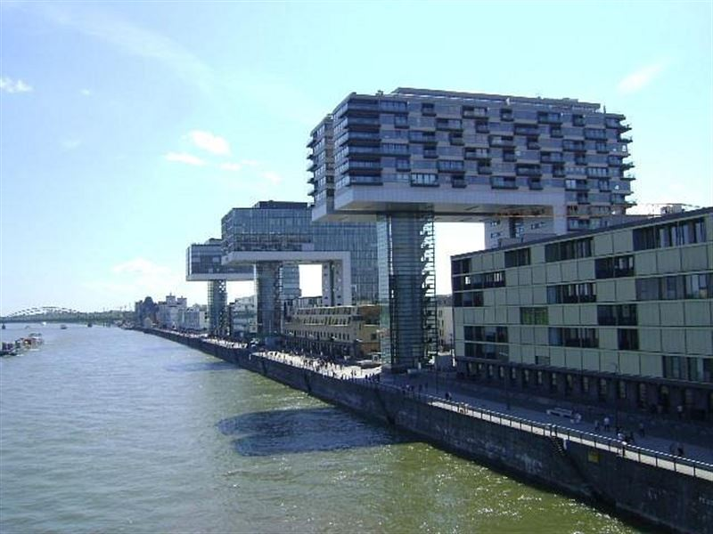
Kranhauser im Rheinauhafen
Completed in 2010, these three distinct buildings were designed to resemble the historic harbor cranes that once operated along the Rhine. They are central to the revitalization of the old port district, bridging the city's industrial maritime past with its modern urban development.
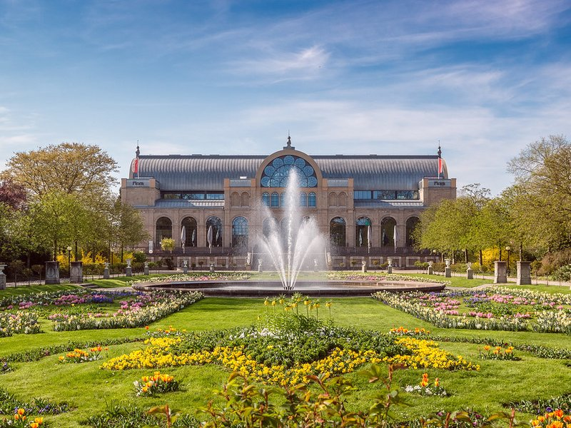
Flora und Botanischer Garten Koln
Established in 1864, this formal park was created for recreation and botanical study following the destruction of older city gardens. It features diverse historical garden styles, including French Baroque and English landscape designs, serving as an important center for botanical research.
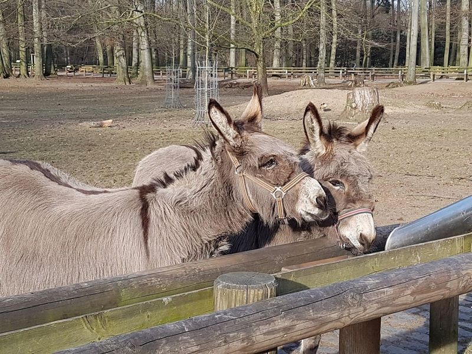
Lindenthaler Tierpark
Nestled within the serene Stadtwald, Lindenthaler Tierpark is a delightful gem in Cologne that offers an enchanting experience for animal lovers of all ages. This charming eco-friendly petting zoo features over 250 small animals, including adorable highland cows, playful pygmy goats, and gentle fallow deer. travellers can enjoy close encounters with these furry friends as many are accessible for petting and feeding.
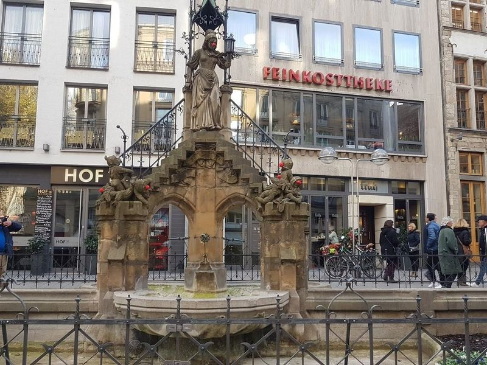
Heinzelmännchenbrunnen
Heinzelmännchenbrunnen in Cologne is an ornate 19th-century fountain that commemorates the local legend of house gnomes known as Heinzelmannchen. According to the tale, these gnome-like creatures used to do all the work in Cologne at night, allowing the citizens to relax during the day. The fountain depicts a curious tailor's wife trying to catch a glimpse of the Heinzelmannchen and ends up chasing them away.
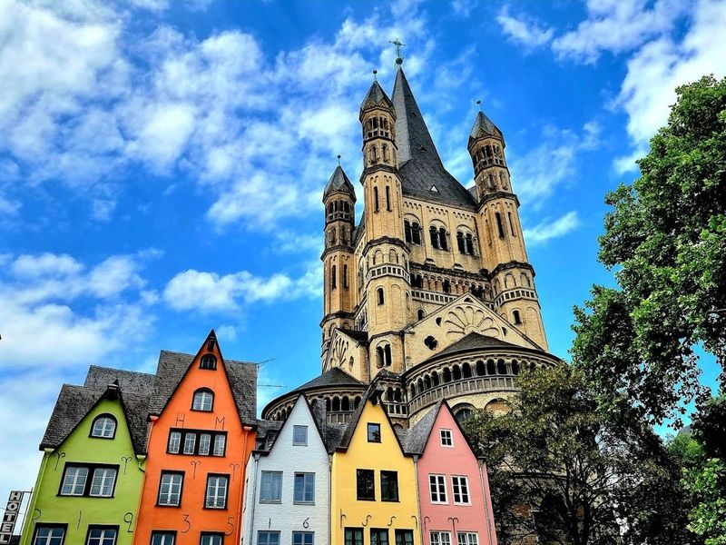
Great St. Martin Church
Nestled in the vibrant Old Town of Cologne, Germany, Great St. Martin Church is a Romanesque masterpiece that dates back to between 1150 and 1250. This architectural gem stands as one of the city's most significant landmarks, showcasing its impressive design and unique features like the clover leaf-shaped choral area and a striking passage tower.
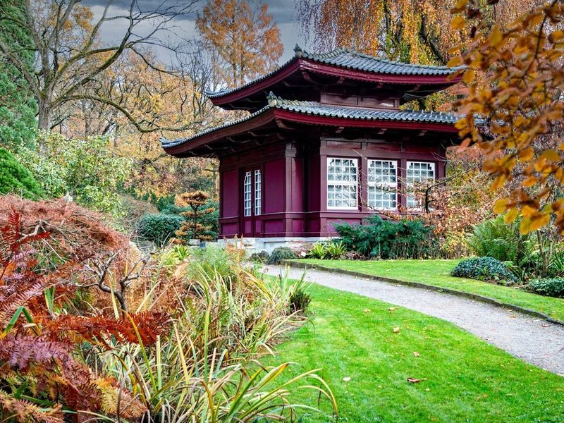
Japanese Garden Leverkusen
The Japanese Garden Leverkusen is a delightful oasis that was established in 1913 by a local entrepreneur. This enchanting garden showcases an array of traditional Japanese plants, serene ponds filled with koi fish, and charming temples that create a tranquil atmosphere perfect for relaxation. travellers can meander along elegant bridges and admire the carefully arranged stones and flora, all designed to promote peace and reflection.
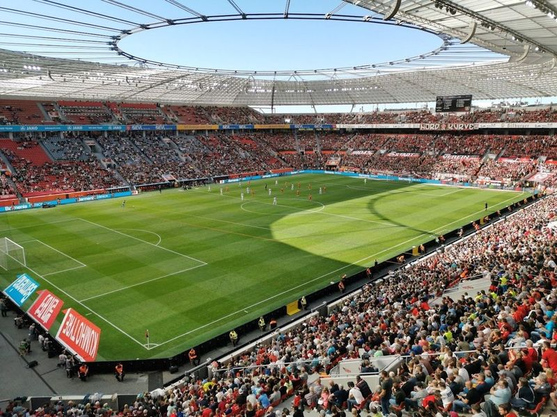
BayArena
BayArena, the home of Bayer Leverkusen, is a must-visit for football enthusiasts. With a seating capacity of around 30,000 spectators, it offers an immersive behind-the-scenes tour that includes walking through the tunnel onto the pitch and visiting various lounges and rooms. The stadium's design was based on the Ruhrstadium in Bochum and was constructed section by section to accommodate the club's growing demands.
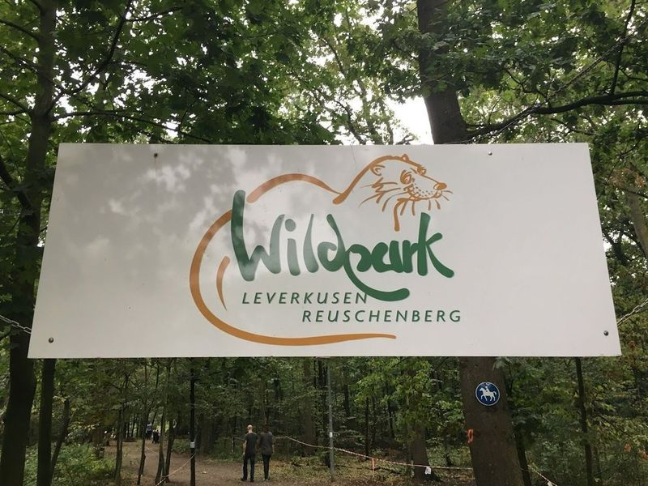
Wildpark Reuschenberg
Wildpark Reuschenberg is a fantastic destination for families with young children, offering a diverse range of animals and an entertaining playground. travellers can enjoy a leisurely stroll while taking in the sights of the resident wildlife, which includes lynxes, otters, deer, tortoises, and birds of prey. The park also showcases local fauna alongside a few exceptions. What makes this place even more appealing is that it's free to enter.
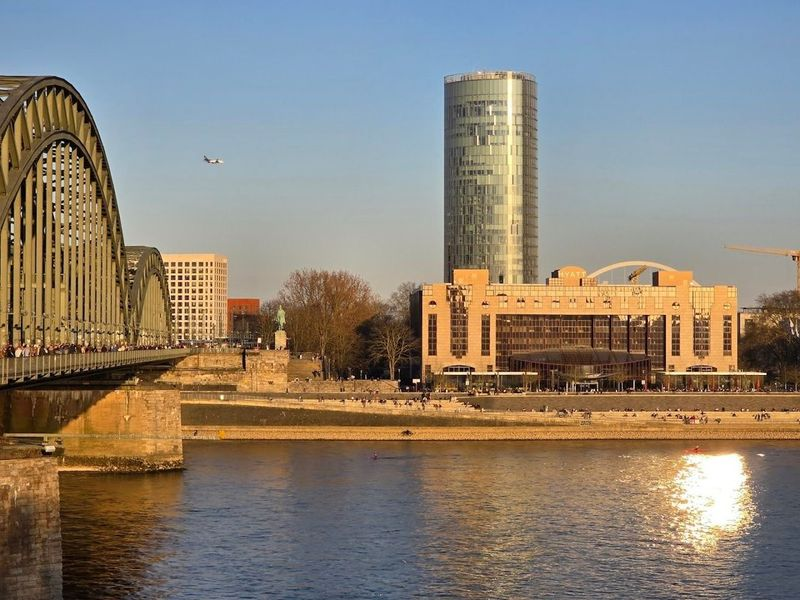
Cologne Triangle
The Cologne Triangle, a striking modern office building in the Deutz district, features an impressive observation deck that stands 103 meters above the ground. This vantage point offers travellers 360-degree views of Cologne and its Rhine River. For just a small fee, ascend to this sky-high platform either by lift or via stairs for those seeking a bit of exercise. The experience is particularly magical at dusk when the city lights begin to twinkle below.
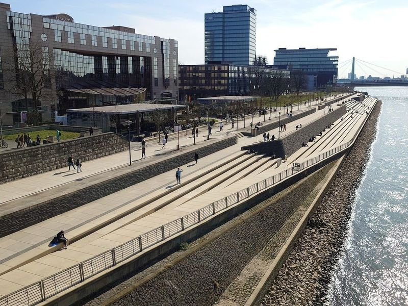
Rheinboulevard
Rheinboulevard is a riverside promenade that stretches for 1,640 feet along the banks of the Rhine in Cologne. This beautifully designed walkway features an impressive staircase that offers views of the Cologne Cathedral and the charming pastel-colored townhouses of the old town. It's a perfect spot to unwind, sip on a refreshing Kölsch beer, and soak in the vibrant atmosphere.
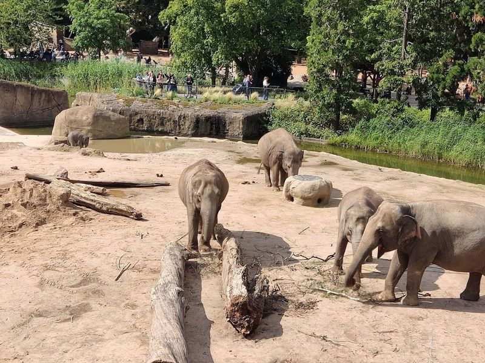
Cologne Zoo
Nestled in the heart of Cologne, the Cologne Zoological Garden is a historic gem that has been captivating travellers since its establishment in 1860. This long-standing zoo boasts an impressive collection of over 10,000 animals representing more than 850 species. Among its many attractions are a elephant park—the largest in Northern Europe—an engaging aquarium, and a lush rainforest house that transports you to exotic locales.
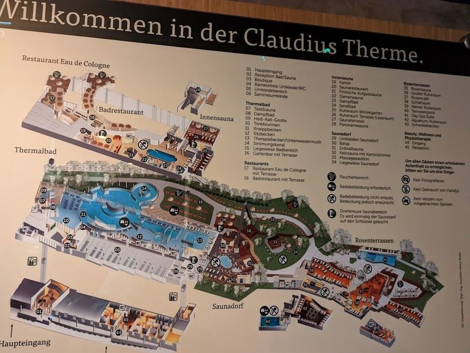
Claudius Therme
Claudius Therme, located in Cologne's Rheinpark, is a spa offering both indoor and outdoor thermal baths, saunas, relaxation rooms, and beautiful gardens. The facility is designed in the style of ancient Roman Thermae but features modern amenities such as massage therapy treatments. travellers can enjoy various thermal pools with warm water temperatures ranging from 33 to 37 degrees Celsius. Additionally, there are wellness and beauty areas for complete pampering.
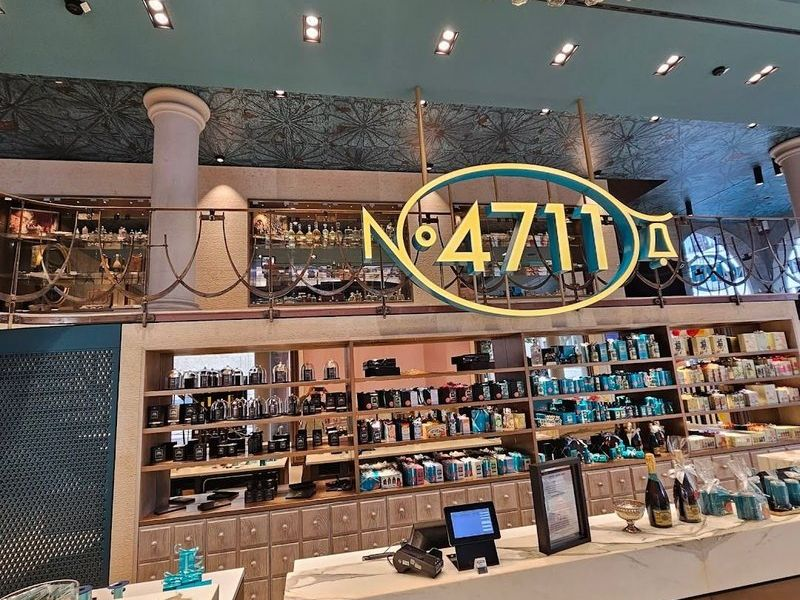
Dufthaus 4711
Dufthaus 4711 is the urban flagship store of the cologne house, offering guided history tours and fragrance seminars. Established in 1792, this historic location at Glockengasse provides travellers with a unique olfactory experience. Guests can partake in guided tours, explore the fragrance fountain of Original Eau de Cologne, and even create their own personalized scent by learning about different ingredients.
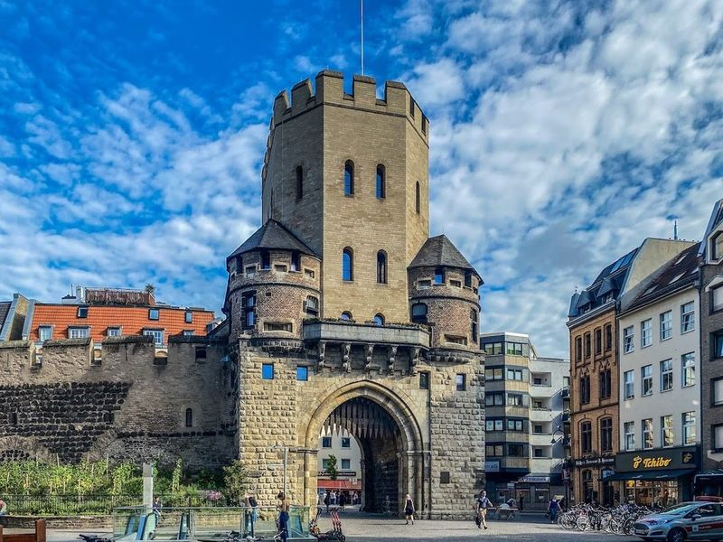
Severinstorburg
Severinstorburg is a 12th-century city gatehouse in Cologne, Germany. It offers three rooms for hosting various events such as wedding receptions, parties, and corporate gatherings. The gatehouse is part of the historical fortifications of Cologne and is located in a commercial area with restaurants and businesses nearby. travellers can take a tour of the gates and walls of the city to explore its historical significance.
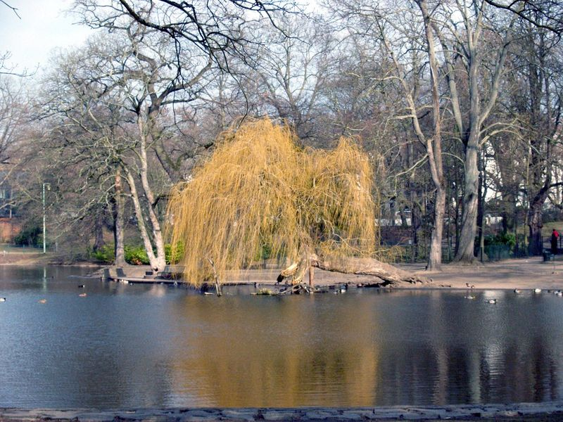
Volksgarten Köln
A large public park with lakes, playgrounds, and ample green space for outdoor activities and relaxation. The site is catalogued as a tourist attraction. Volksgarten Köln is listed among principal sites for Cologne within Germany. Municipal and regional heritage listings document its place in the historic centre and visitor routes through Cologne.
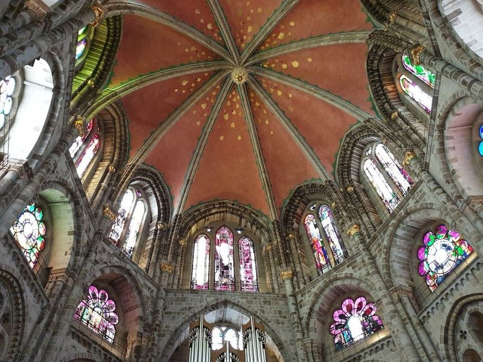
St. Gereon
Nestled just a stone's throw from the Romerturm, the Basilica of St. Gereon is a captivating medieval Catholic church that showcases the beauty of Romanesque architecture. This remarkable structure, with its distinctive ten-sided dome, dates back to the sixth century and was completed in 1227. While much of its exterior has stood the test of time, it wasn't until the 20th century that significant interior renovations took place.
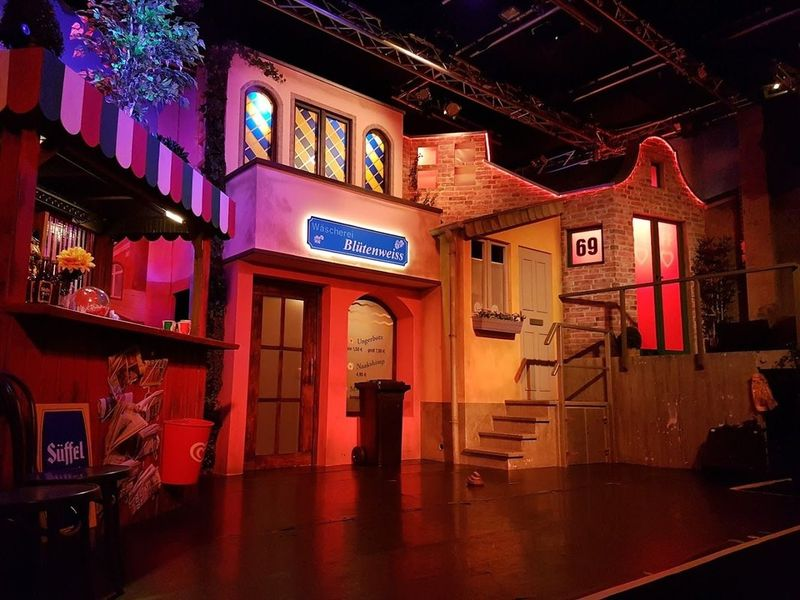
Scala Theater
The Scala Theater is a small, self-sufficient venue that showcases humorous plays, musicals, and various live presentations. This independent theater offers a wide range of performing arts shows without relying on big productions or famous performers. With its focus on comedy and music performances, the Scala Theater provides an intimate and entertaining experience for audiences who appreciate diverse forms of live entertainment.